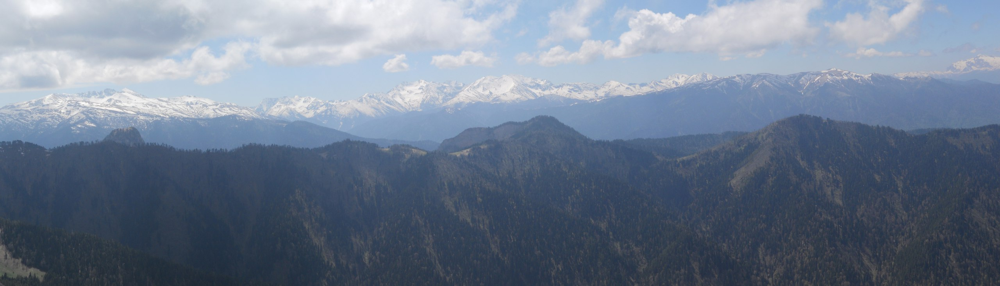
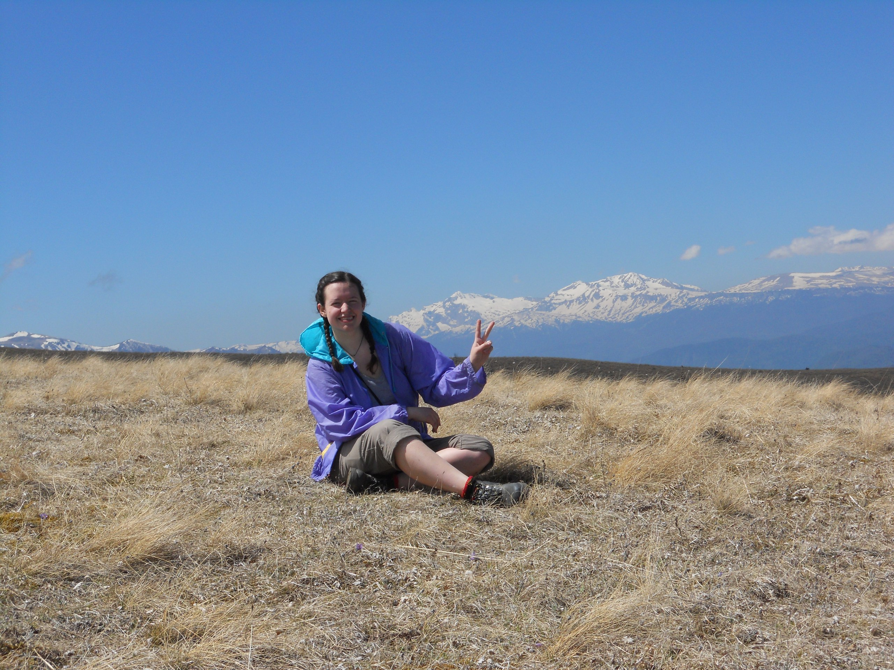

Левадная Антонина Сергеевна
(Сайт-портфолио аспирантки ДонНУ 1 года обучения)

Обо мне
"Есть в математике нечто, вызывающее человеческий восторг" - произнес как-то немецкий математик Феликс Хаусдорф и я могу с ним только согласиться.
Понятны мне и чувства маленькой Софьи Ковалевской,чья любовь к математике началась с созерцания обоев в детской, точнее, с их отсутствия – на комнату не хватило материала, и стены обклеили лекциями Михаила Остроградского о дифференциальном и интегральном исчислении.
Меня тоже всегда завораживали математические знаки, символы, формулы. А сколько радости доставляла любая решенная задача! Всех неравнодушных к математике я рада видеть на своем персональном сайте.
На страницах этого сайта можно:
- учителям математики воспользоваться разработками уроков и внеклассных мероприятий;
- ученикам найти материалы для подготовки к итоговой аттестации;
- родителям прочитать различные методические рекомендации;
- всем любителям математики решить любые понравившиеся задачи, а также улыбнуться, заглянув в раздел "Юмор".
- буду вам очень признательна, если вы заполните Анкету посетителя сайта. Ваши ответы позволят мне понять направление дальнейшего развития моего сайта.
Личная информация
| День рождения: | 16 июня 1993 г. |
| Город: | Донецк |
| Место работы: | Лицей при ДонНу |
| Телефон: | +38(095)00-00-000 |
Основная информация
| Родной город: | Дружковка |
| Языки: | Русский, Украинский, Английский |
Карьера
| Место работы: | Лицей при ДонНу Донецк, с 2015 г. Учитель математики и информатики |
| Место работы: |
ДОШ №8 Донецк, 2014–2015 Учитель математики |
Образование
| Вуз: | ДонНУ '18 |
| Факультет: | Математики и информационных технологий |
| Кафедра: | Математического анализа и дифференциальных уравнений |
| Форма обучения: | Дневное отделение |
| Статус: | Аспирантка |
| Школа: |
Школа №7 '10 Дружковка, 2000–2010 (а) |
| Любимые цитаты: |
День кончился. Что было в нем? Не знаю, пролетел, как птица. Он был обыкновенным днем, А все-таки - не повторится. © Зинаида Гиппиус Война - приходящее и уходящее, а музыка вечна! © Леонид Фёдорович Быков Как мало в этой жизни надо Нам, детям, - и тебе и мне. Ведь сердце радоваться радо И самой малой новизне. Случайно на ноже карманном Найди пылинку дальних стран - И мир опять предстанет странным, Закутанным в цветной туман. © Александр Блок |